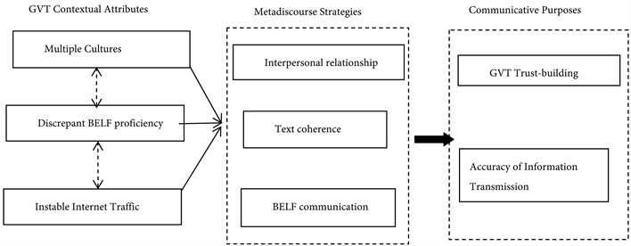

Productivity Boosting Communication Strategies
By: Violet
Introduction
Improving productivity in the workplace is a shared goal for both employers and employees alike. There are various ways to achieve this; one of the most effective ways is through the implementation of effective communication strategies. Good communication in the workplace is more than just exchanging information; it impacts the bottom line of any business. Contrary to popular belief, communication is not just about speaking persuasively or writing a concise email. It's about creating an environment where ideas are discussed, and issues are addressed constructively. The importance of communication in the workplace cannot be overstated. It’s the cornerstone of organizational success, and without it, teams can become unproductive and demotivated.
Effective communication can ensure that all team members understand what is expected of them, and it promotes accountability. Studies show that teams that communicate effectively are more innovative, efficient, and have higher morale than those that do not. These strategies are not difficult; they involve adopting a series of habits that will help to streamline communication in your team. This website is devoted to providing practical tips and techniques to enhance communication in the workplace.
Our mission is to help businesses, teams, and individuals improve productivity, eliminate bottlenecks, and build thriving organizational cultures through effective communication strategies. We will explore essential communication skills, examine common barriers to effective communication, and provide practical solutions. Additionally, we will provide case studies of businesses that have implemented these strategies and have achieved significant results. Join us as we help you unleash the full potential of your team through effective communication strategies.
ad space
Active Listening
Effective Communication Strategies: The Power of Active Listening
Have you ever felt like you were talking to a wall during a conversation at work? Have you ever had a team member misunderstand your instructions, leading to mistakes or missed deadlines? Poor communication can lead to decreased productivity, decreased job satisfaction, and even a toxic work environment. That's why it's critical to focus on active listening as a tool to improve communication and boost productivity in the workplace.
Active listening is a communication skill that involves not just hearing what someone is saying, but also truly understanding their message, tone, and intention. It's about giving your full attention to the speaker and showing empathy for their perspective. Active listening can help build stronger relationships, increase trust, and foster a culture of open communication.
Research shows that active listening can have a significant impact on workplace productivity. When your team members feel that they are being heard, they are more likely to work together effectively and feel more engaged in their work. Active listening can also reduce misunderstandings and conflict, saving time and energy that might otherwise be spent on resolving disputes.
But how can you become a better active listener? One key is to practice mindfulness: be fully present in the moment during conversations and avoid distractions like checking your phone or multitasking. You can also demonstrate your attentiveness by providing verbal cues like nodding or summarizing what the speaker has said. Finally, be open-minded and try to see the situation from the other person's perspective.
By cultivating active listening skills, you can improve your communication with colleagues, boost productivity, and create a more positive work environment. Give active listening a try and see the difference it can make in your team's performance.
ad space
Clear and Concise Communication
In today's fast-paced business world, communication is a vital component in any organization's success. Poor communication leads to misunderstandings, mistakes, and decreased productivity. On the other hand, clear and concise communication can lead to efficient collaboration, increased output, and higher job satisfaction.
Clear and concise communication is the practice of conveying information in a straightforward, unambiguous, and precise manner. It involves eliminating unnecessary jargon, using active voice, and avoiding vague or confusing language. Research shows that employees spend an average of 80% of their day communicating, and the efficient use of language can save time spent on decoding messages, leading to higher productivity levels.
The benefits of clear and concise communication go beyond productivity. It can also prevent conflicts and misunderstandings that hinder the achievement of organizational objectives. In the long term, it can improve employee engagement and retention, reduce stress levels, and boost morale.
There are several ways to improve your communication skills. One of the most effective strategies is to use the "read-back" method. This involves repeating key points in your conversation to ensure that both parties have understood the message. Another strategy is to practice active listening, where you actively engage in the conversation and show interest in what the other person is saying.
In conclusion, clear and concise communication is crucial for boosting productivity in any organization. It involves using language effectively to convey information accurately and efficiently. By practicing effective communication strategies, employees can enhance their collaboration, prevent conflicts, and improve overall job satisfaction.
ad space
Utilize Technology
As we move further into the digital age, technology has become an integral part of our lives. Gone are the days of handwritten notes and phone calls; now, we have an abundance of apps and tools at our disposal that can help us communicate and collaborate more efficiently than ever before. But with so many options available, it can be overwhelming to know where to start. That's why we're here to tell you: if you want to improve your productivity, you need to be utilizing technology.
From video conferencing to project management tools, technology has revolutionized the way we work. For example, if you're working with a remote team, video conferencing tools like Zoom or Skype can bridge the gap and allow you to communicate face-to-face, no matter where you are in the world. This not only fosters a stronger sense of community, but it also allows for more efficient collaboration, as you can easily share your screen and work on documents together in real-time.
Another productivity-boosting technology tool is project management software, such as Trello or Asana. These tools can help you keep track of deadlines, delegate tasks, and monitor progress, all in one place. This minimizes the need for endless email chains and helps ensure that nothing falls through the cracks.
In addition to these apps and tools, there are also other ways technology can improve communication, such as instant messaging and email scheduling. With instant messaging software like Slack or Microsoft Teams, you can quickly communicate with your colleagues without the need for lengthy email threads. And with email scheduling software like Boomerang or Gmail's built-in scheduler, you can ensure that your emails are sent at a time that's most convenient for the recipient, which can help increase the chances of a timely response.
It's clear that technology has the potential to greatly improve our communication and productivity. By utilizing these tools and apps, we can work smarter, not harder, and achieve more in less time. So if you're looking to amp up your productivity game, start exploring the world of technology today. You won't regret it.
ad space
Recognize and Address Communication Barriers
Effective communication plays a significant role in increasing productivity and ensuring success in any business setting. However, despite its importance, communication barriers can hinder progress and impede your team's productivity. To overcome these barriers, you need to be aware of the hurdles that can affect communication and how to overcome them.
Misunderstandings, interruptions, and emotional reactions are common communication barriers that affect team interactions. For example, failure to listen actively and attentively, interrupting others during conversations, or not clearly articulating your points can lead to misunderstandings, miscommunications, and conflicts. These barriers can result in delays, errors, and decreased trust among team members.
To recognize and address communication barriers, it is essential first to identify the root causes. Are there cultural differences or language barriers that hinder communication? Does your team face challenges in adapting to new communication technologies? Are there interpersonal conflicts or significant differences in communication styles among team members? Once identified, you must take appropriate steps to resolve these barriers.
Solutions to communication barriers include implementing better communication technologies, providing training and coaching to team members who face language barriers, ensuring everyone is on the same page with communication styles, and promoting active listening and mindfulness practices.
In conclusion, effective communication within a team is essential to keep productivity high and ensure success in any business setting. To overcome communication barriers, one needs to identify the root cause and take appropriate steps to address them, including communication technology, training, and coaching, and understanding differences in communication styles. By doing this, you can avoid delays and conflicts, build trust, and improve productivity among your team members.
ad space
Conclusion
Transform Your Workplace Communication and Boost Your Productivity Today!
In today's fast-paced world, it's impossible to overstate the importance of effective communication, especially in the workplace. Whether you're part of a small start-up or a large corporation, communication breakdowns can have dire consequences, causing misunderstandings, missed deadlines, and even driving customers away. That's why it's crucial to adopt productivity-boosting communication strategies that can help you streamline your workflow, improve collaboration, and ultimately achieve greater success.
Over the course of this website, we've explored numerous communication strategies that are designed to help you work more effectively and efficiently. From email etiquette to remote communication techniques, we've covered it all. So, what's the conclusion? How can you bring all of these strategies together to achieve optimal productivity in your workplace?
The answer is simple: by implementing a holistic approach to communication that takes into account your company's unique needs and goals. By carefully analyzing your workflow and identifying any obstacles to effective communication, you can create a tailored communication plan that empowers your team to work more effectively and achieve greater success.
So, whether you're leading a team or working as part of one, take the time to evaluate your current communication practices and seek out ways to improve them. With the right mindset, tools, and strategies in place, you can transform your workplace communication and reach new heights of productivity. Start exploring our website today to learn more!
ad space